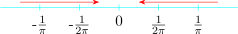
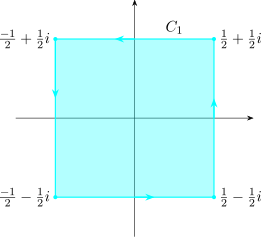
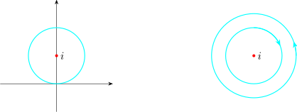
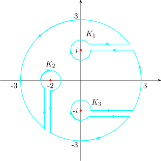

6.3 The Cauchy - Goursat Theorem
Definition 6.8. We say that \(z_0\) is a singular point of \(f(z)\) if \(f(z)\) is not analytic at \(z_0\) but is differentiable in the neighbourhood of \(z_0\).
Definition 6.9. The point \(z_0\) is a isolated singularity if \(f(z)\) is analytic everywhere in the neighbourhood of \(z_0\) except at \(z_0\).
Examples
- 1.
- \(f(z) = \frac {1}{z}\,,\,\) singular point at \(z = 0\), and is isolated.
- 2.
- \(f(z) = \frac {z(3 + z)}{\big (z^2 + 4\big )\big (z^2 - 1\big )}\,,\,\) singular points are \(z = \pm 1,\, \pm 2i\) and they are all isolated.
- 3.
- \(f(z) = \frac {1}{\cos z}\,\) singular points \(z = \frac {n\pi }{2}, \quad n = \pm 1, \, \pm 3, \, 5,\,\pm 7,\cdots \,\) and they are all isolated.
- 4.
- \(f(z) = \frac {1}{\sin \Big (\frac {1}{z}\Big )}\,, \,\) singular points \(\frac {1}{z} = 0, \, \pi , \,, 2\pi , \, 3\pi \,\cdots \)
\(\implies \frac {1}{z} = n\pi , \, n\in \mathbb {Z}\)
\(\implies z = \frac {1}{n\pi }\,,\, n\in \mathbb {Z}\)
and \(z = 0\)
Singularities of the form \(z = \frac {1}{n\pi }\) are isolated but \(z = 0\) is not.
Definition 6.10. A region \(\Omega _x\) will be said to be \(x-\)simple if any line in \(\Omega _x\) drawn parallel to \(y-\)axis crosses
the boundary of \(\Omega _x\) only twice.
Similarly, \(\Omega _y\) is \(y-\)simple if a line drawn parallel to the \(x-\)axis only crosses the boundary twice.
If a region is both \(x-\)simple and \(y-\)simple then it is said to be simple.
Theorem 6.11 (Green’s Theorem for Simple Region). Let \(\Omega \) be a simple region in the \(xy-\)plane with boundary \(\Gamma \) oriented counter clockwise then if \(P(x,y)\) and \(Q(x,y)\) together with its partial derivatives are continuous in \(\Omega \), then \[ \iint \limits _{\Omega } \Bigg (\frac {\partial Q}{\partial x} - \frac {\partial P}{\partial y}\Bigg )dxdy = \int \limits _{\Gamma } \Big [Pdx + Qdy\Big ]\]
Proof: Research
Theorem 6.12 (Cauchy - Goursat). If \(f(z)\) is analytic in a simply connected region \(D\) and also on its boundary \(C\) which is a smooth closed curve, then \[\ointctrclockwise _C f(z) dz = 0\]
Proof. If \(f(z) = u + iv\), then \(\displaystyle {\ointctrclockwise _C f(z) dz = \int _C \Big [ u dx - vdy\Big ] + i \int _C \Big [udy + vdx\Big ]}\)
Assuming \(f(z)\) and \(f'(z)\) are continuous. Then we can apply Green’s theorem
\[\implies \quad \int _Cf(z) dz = - \iint \limits _D \Bigg (\frac {\partial v}{\partial x} + \frac {\partial u}{\partial y}\Bigg ) dxdy + i \iint \limits _D \Bigg (\frac {\partial u}{\partial x} - \frac {\partial v}{\partial y}\Bigg )dxdy\]
Since \(f(z)\) is analytic in \(D\), it satisfies the Cauchy - Riemann equations. Thus
\[\int _C f(z) dz = 0\]
. □
Theorem 6.13 ( Generalised Cauchy - Goursat). Let the domain \(D\) be bounded externally by a simple closed contour \(C_0\) and internally by non intersecting closed contours \(C_1, C_2, \ldots , C_n\). Let both the external and internal contours be positively oriented. Then if \(f(z)\) is analytic in \(D\) then \[ \int _{C_0} f(z)dz = \sum ^n_{r = 1} \int _{C_r}f(z)dz\]
Example 6.14. Evaluate \(\displaystyle {\int _C \frac {\big (4 - 2i\big ) z^2 + \big (2 - 5i\big ) z + \big (3 - 2i\big )}{\big (z^2 + 1\big )\big (z + 2\big )}dz}\) where
- 1.
- \(C\) is the square \(C_1\) with corners \(\frac {1}{2}+ \frac {1}{2}i\,, \quad \frac {-1}{2}+ \frac {1}{2}i\,, \quad \frac {-1}{2} - \frac {1}{2}i\,, \quad \frac {1}{2}-\frac {1}{2}i\)
- 2.
- \(C\) is the unit circle \(C_2\) centered on \(z = i\).
- 3.
- \(C\) is the unit circle \(C_3\) centered at \(z = -2\).
Working
- 1.
-

We first check if \(\displaystyle { \frac {\big (4 - 2i\big ) z^2 + \big (2 - 5i\big ) z + \big (3 - 2i\big )}{\big (z^2 + 1\big )\big (z + 2\big )}}\) is analytic inside the region enclosed by \(C_1\). \(f(z)\) has singularities at \(z = \pm i,\, z = -2,\,\), clearly are not in the enclosed region. Thus \(f(z)\) is analytic in the region. By Cauchy Goursat we have \[\int _{C_1} f(z)dz = 0\]
- 2.
-

Clearly \(i\) is in the enclosed region. Thus by Cauchy Goursat \(\quad \displaystyle {\int _{C_2} f(z)dz = \sum ^1_{r=1} \int f(z)dz}\) \[f(z) = \frac {-i}{z - i} + \frac {1 + i}{z + i} + \frac {3}{z + 2}\]
So that \(\quad \displaystyle {\int _{C_2}f(z)dz = -i \int _{C_2} \frac {1}{z - i}dz + \big (1 + i\big )\underbrace {\int _{C_2} \frac {1}{z + i}dz}_0 + 3 \underbrace {\int _{C_2}\frac {1}{z + 2}dz}_0}\)
\begin {align*} \therefore \quad \int _Cf(z) dz & = - i \int _{C_2} \frac {1}{z - i}dz\\ & = -i \int ^{2\pi }_0\\ & = 2\pi \\ \end {align*}
- 3.
- When \(C\) is the unit circle \(C_3\) centered on \(z = -2\)

\begin {align*} \text {Thus}\quad \int _{C_3}f(z)dz & = 0 + 0 + \int _{C_3} \frac {1}{z + 2}dz\\ & = 3(2\pi i)\\ & = 6\pi i\\\\ \end {align*}
Example 6.15. Evaluate \(\displaystyle {\int _C\frac {z^2 + \big (10- i\big )z - \big (4 + 2i\big )}{\big (z^2 + 1\big )\big (z + 2\big )}dz}\) where \(C\) is the circle \(\left |z\right | = 3\).
Singular points are \(\, z = \pm i, \, z = -2\)

Let \(K_1, K_2, K_3\) be the closed contours as shown. Since \(f(z)\) is analytic in \(D\), thus by Cauchy - Goursat
\[\int _C f(z) dz = \int _{K_1}f(z)dz + \int _{K_2}f(z)dz + \int _{K_3}f(z)dz\]
\[f(z) = \frac {2}{z - i} + \frac {3}{z + i} - \frac {4}{z + 2}\]
\begin {align*} \therefore \quad \int _C f(z)dz & = 2 \int _{K_1} \frac {1}{z - i}dz - \int _{K_2}\frac {1}{z + 2}dz + 3\int _{K_3}\frac {1}{z + i}dz\\\\ & = 2\big (2\pi i\big ) - 4\big (2\pi i\big ) + 3\big (2\pi i\big )\\\\ & = 2\pi i\\\\ \end {align*}
Questions on this section
Stuck on something here? Ask below and it stays attached to this topic.